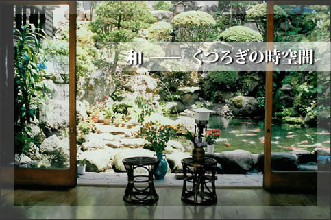
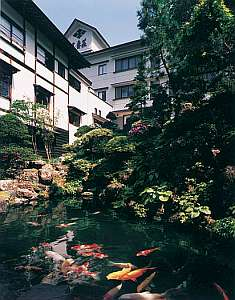
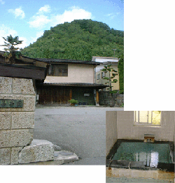

ようこそ吾妻荘へ

温泉
日本には多くの火山があり、それにともなって数多くの温泉が点在しています。その数は大小合わせて数千にも及ぶと言われています。温泉は含まれる成分の種類と量によって、様々に分類されます。 温泉は、大変リラックス効果が高く、古来より日本人の大きな楽しみの一つとなっています。。
人々は普通、旅館に泊まって温泉を楽しみます。旅館の客室は簡素な畳の部屋で、 ふすま、障子のついた和室となっています。 また様式のベッドの代わりには布団が使われます。食事は朝晩の二食が付いていて、各客室、あるいは大きな共同の食堂で食べる ことができます。
吾妻荘
吾妻荘は日本の東北地方の小野川温泉にある温泉旅館です。小野川の透明な温泉水は体の疲れだけでなく、心の疲れをも癒してくれます。また、小野川温泉は美肌効果がすばらしく、入浴後の肌は驚くほど柔らかく、すべすべになります。 そのため、小野川温泉は特に女性に人気のある温泉です。当旅館は本館（吾妻荘）、豪華な別館(吾妻苑）、湯治客のためのリーズナブルな別館（保養センター）の三棟からなっていますので、お客様の好みとご希望価格によって お選び頂けます。
従業員一同、皆様のお越しを心よりお待ちしております。

